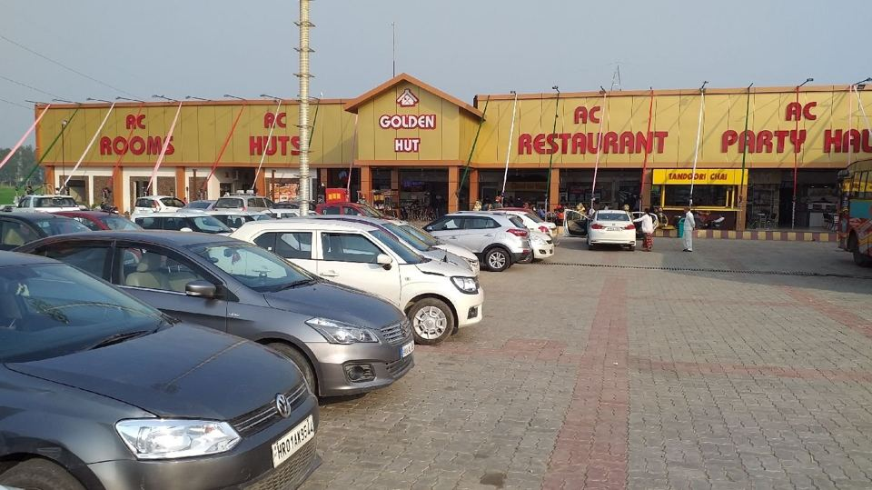

ARRIVE ≈07:55
Photo: Google Maps listing
First cup · 3 hours in
Golden Hut
Umri Chowk, NH44 · Kurukshetra, Haryana
This is the stop that's actually open at 8 AM on a weekday. It runs 24 hours and has a Tandoori Chai counter, an in-house coffee bar, a Dosa Plaza kiosk, clean washrooms and EV chargers, all on the left side of the highway heading north.
Order thisCappuccino for the driver, a kulhad of tandoori chai for everyone else, plus a plate of their paneer paratha.
- Open 24 h
- Huge parking
- EV charging
- Washrooms